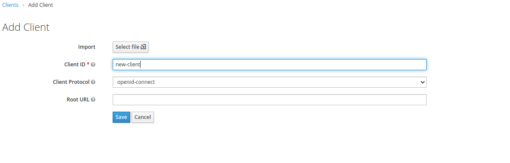

On-Premises Documentation¶
On-premises, also known as self-hosted, is a setup that allows Konfuzio to be implemented 100% on your own infrastructure. In practice, it means that you know where your data is stored, how it’s handled and who gets hold of it. This is because you keep the data on your own servers.
A common way to operate a production-ready and scalabe Konfuzio installation is via Kubernetes. An alternative and more light-weight deployment option is the Single VM setup via Docker. We recommend to use the option which is more familiar to you.
On-Premise Konfuzio installations allow to create Superuser accounts which can access all Documents, Projects and AIs via a dedicated view as well as creating custom Roles
Kubernetes¶
Required tools¶
Before deploying Konfuzio to your Kubernetes cluster, there are some tools you must have installed locally.
kubectl¶
kubectl is the tool that talks to the Kubernetes API. kubectl 1.15 or higher is required and it needs to be compatible with your cluster (+/-1 minor release from your cluster).
> Install kubectl locally by following the Kubernetes documentation.
The server version of kubectl cannot be obtained until we connect to a cluster. Proceed with setting up Helm.
Helm¶
Helm is the package manager for Kubernetes. Konfuzio is tested and supported with Helm v3.
Getting Helm¶
You can get Helm from the project’s releases page, or follow other options under the official documentation of installing Helm.
Connect to a local Minikube cluster¶
For test purposes you can use minikube as your local cluster. If kubectl cluster-info
is not showing minikube as the current cluster, use kubectl config set-cluster
minikube to set the active cluster. For clusters in production please visit the Kubernetes
Documentation.
Initializing Helm¶
If Helm v3 is being used, there no longer is an init sub command and the command is
ready to be used once it is installed. Otherwise please upgrade Helm.
Next steps¶
Once kubectl and Helm are configured, you can continue to configuring your Kubernetes cluster.
Deployment¶
Before running helm install, you need to make some decisions about how you will run
Konfuzio. Options can be specified using Helm’s --set option.name=value or --values=my_values.yaml command
line option. A complete list of command line options can be found here. This guide will
cover required values and common options.
Create a values.yaml file for your Konfuzio configuration. See Helm docs for information on how your values file will override the defaults. Useful default values can be found in the values.yaml in the chart repository.
Selecting configuration options¶
In each section collect the options that will be combined to use with helm install.
Secrets¶
There are some secrets that need to be created (e.g. SSH keys). By default they will be generated automatically.
Networking and DNS¶
By default, Konfuzio relies on Kubernetes Service objects of type: LoadBalancer to
expose Konfuzio services using name-based virtual servers configured with Ingress
objects. You’ll need to specify a domain which will contain records to resolve the
domain to the appropriate IP.
--set ingress.enabled=True
--set ingress.HOST_NAME=konfuzio.example.com
Persistence¶
By default the setup will create Volume Claims with the expectation that a dynamic provisioner will create the underlying Persistent Volumes. If you would like to customize the storageClass or manually create and assign volumes,please review the storage documentation.
Important : After initial installation, making changes to your storage settings requires manually editing Kubernetes objects, so it’s best to plan ahead before installing your production instance of Konfuzio to avoid extra storage migration work.
TLS certificates¶
You should be running Konfuzio using https which requiresTLS certificates. By default, the setup will install and configure cert-manager to obtain free TLS certificates. If you have your own wildcard certificate, you already have cert-manager installed, or you have some other way of obtaining TLS certificates. For the default configuration, you must specify an email address to register your TLS certificates.
Include these options in your Helm install command:
--set certmanager-issuer.email=me@example.com
PostgreSQL¶
By default this Konfuzio provides an in-cluster PostgreSQL database, for trial purposes only.
NOTE: This configuration is not recommended for use in production.
A single, non-resilient Deployment is used
You can read more about setting up your production-readydatabase in the PostgreSQL documentation. As soon you have an external PostgreSQL database ready, Konfuzio can be configured to use it as shown below.
Include these options in your Helm install command:
--set postgresql.install=false
--set global.psql.host=production.postgress.hostname.local
--set global.psql.password.secret=kubernetes_secret_name
--set global.psql.password.key=key_that_contains_postgres_password
Redis¶
All the Redis configuration settings are configured automatically.
Persistent Volume¶
Konfuzio relies on object storage for highly-available persistent data in Kubernetes. By default, Konfuzio uses a persistent volume within the cluster.
CPU, GPU and RAM Resource Requirements¶
The resource requests, and number of replicas for the Konfuzio components in this setup are set by default to be adequate for a small production deployment. This is intended to fit in a cluster with at least 8 vCPU with AVX2 support enabled, 32 GB of RAM and one Nvidia GPU with minimum 4GB which supports at least CUDA10.1 and CUDNN 7.0. If you are trying to deploy a non-production instance, you can reduce the defaults in order to fit into a smaller cluster. Konfuzio can work without a GPU. The GPU is used to train and run Categorization AIs. We observe a 5x faster training and a 2x faster execution on GPU compared to CPU. Most Konfuzio Installations do not use GPUs.
Deploy using Helm¶
Once you have all of your configuration options collected, we can get any dependencies
and run Helm. In this example, we’ve named our Helm release konfuzio.
helm repo add konfuzio-repo https://git.konfuzio.com/api/v4/projects/106/packages/helm/stable
helm repo update
helm upgrade --install konfuzio konfuzio-repo/konfuzio-chart --values my_values.yaml
Please create a my_values.yaml file for your Konfuzio configuration. Useful default values can be found in the values.yaml in the chart repository. See Helm docs for information on how your values file will override the defaults. Alternativ you can specify you configuration using --set option.name=value.
Monitoring the Deployment¶
The status of the deployment can be checked by running helm status konfuzio which
can also be done while the deployment is taking place if you run the command in
another terminal.
Initial login¶
You can access the Konfuzio instance by visiting the domain specified during installation. In order to create an initial superuser, please to connect to a running pod.
kubectl get pod
kubectl exec --stdin --tty my-konfuzio-* -- bash
python manage.py createsuperuser
Upgrade¶
Before upgrading your Konfuzio installation, you need to check the changelog corresponding to the specific release you want to upgrade to and look for any that might pertain to the new version.
We also recommend that you take a backup first.
Upgrade Konfuzio following our standard procedure,with the following additions of:
Check the change log for the specific version you would like to upgrade to
Ensure that you have created a PostgreSQL backup in the previous step. Without a backup, Konfuzio data might be lost if the upgrade fails.
Go through deployment section step by step
Extract your previous
--setarguments with (see Action1)Decide on all the values you need to set
Perform the upgrade, with all
--setarguments extracted(see Action 2)We will perform the migrations for the Database for PostgreSQL automatically.
Action 1
helm get values konfuzio > konfuzio.yaml
Action 2
helm upgrade kofuzio \
--version <new version> \
-f konfuzio.yaml \
--set konfuzio.migrations.enabled=true \
--set ...
Docker¶
Single VM setup¶
Konfuzio can be configured to run on a single virtual machine, without relying on Kubernetes. In this scenario, all necessary containers are started manually or with a container orchestration tool of your choice.
We recommend a virtual machine with a minimum of 8 vCPU (incl. AVX2 support) and 32 GB of RAM and an installed Docker runtime. A Nvidia GPU is recommended but not required. In this setup Konfuzio is running in the context of the Docker executor, therefore there are no strict requirements for the VMs operating systems. However, we recommend a Linux VM with Debian, Ubuntu, CentOS,or Redhat Linux.
1. Download Docker Image¶
The Konfuzio docker image can be downloaded via “docker pull”. We will provide you with the credentials. This action requires an internet connection.
The internet connection can be turned off once the download is complete. In case there is no internet connection available during setup, the container must be transferred with an alternative method as a file to the virtual machine.
Registry URL: {PROVIDED_BY_KONFUZIO}
Username: {PROVIDED_BY_KONFUZIO}
Password: {PROVIDED_BY_KONFUZIO}
> docker login REGISTRY_URL
> docker pull REGISTRY_URL/konfuzio/text-annotation/master:latest
The Tag “latest” should be replaced with an actual version. A list of available tags can be found here: https://dev.konfuzio.com/web/changelog_app.html.
2. Setup PostgreSQL, Redis, BlobStorage/FileSystemStorage¶
The database credentials are needed in this step. Please ensure your selected databases are setup at this point. You may want to use psql and redis-cli to check if database credentials are working.
In case you use FileSystemStorage and Docker volume mounts, you need to make sure the volume can be accessed by the konfuzio docker user (uid=999). You might want to run “chown 999:999 -R /konfuzio-vm/text-annotation/data” on the host VM.
3. Setup environment variable file¶
Copy the /code/.env.example file from the container and adapt it to your settings. The .env file can be saved anywhere on the host VM. In this example we use “/konfuzio-vm/text-annotation.env”.
4. Init the database, create first superuser via cli and prefill e-mail templates¶
In this example we store the files on the host VM and mount the directory “/konfuzio-vm/text-annotation/data” into the container. In the first step we create a container with a shell to then start the initialization scripts within the container. The container needs to be able to access IP addresses and hostnames used in the .env. This can be ensured using –add.host. In the example we make the host IP 10.0.0.1 available.
docker run -it –add-host=10.0.0.1 –env-file /konfuzio-vm/text-annotation.env –mount type=bind,source=/konfuzio-vm/text-annotation/data,target=/data REGISTRY_URL/konfuzio/text-annotation/master:latest bash
python manage.py migrate
python manage.py createsuperuser
python manage.py init_email_templates
python manage.py init_user_permissions
After completing these steps you can exit and remove the container.
Note: The username used during the createsuperuser dialog must have the format of a valid e-mail in order to be able to login later.
5. Start the container¶
In this example we start three containers, the first one to serve the Konfuzio web application. The second and third are used to process tasks in the background without blocking the web application.
docker run -p 80:8000 --name web -d --add-host=host:10.0.0.1 \
--env-file /konfuzio-vm/text-annotation.env \
--mount type=bind,source=/konfuzio-vm/text-annotation/data,target=/data \
REGISTRY_URL/konfuzio/text-annotation/master:latest
docker run --name worker1 -d --add-host=host:10.0.0.1 \
--env-file /konfuzio-vm/text-annotation.env \
--mount type=bind,source=/konfuzio-vm/text-annotation/data,target=/data \
REGISTRY_URL/konfuzio/text-annotation/master:latest \
celery -A app worker -l INFO --concurrency 1 -Q celery,priority_ocr,ocr,\
priority_extract,extract,processing,priority_local_ocr,local_ocr,\
training,finalize,training_heavy,categorize
docker run --name worker2 -d --add-host=host:10.0.0.1 \
--env-file /konfuzio-vm/text-annotation.env \
--mount type=bind,source=/konfuzio-vm/text-annotation/data,target=/data \
REGISTRY_URL/konfuzio/text-annotation/master:latest \
celery -A app worker -l INFO --concurrency 1 -Q celery,priority_ocr,ocr,\
priority_extract,extract,processing,priority_local_ocr,local_ocr,\
training,finalize,training_heavy,categorize
[Optional] 6. Use Flower to monitor tasks¶
Flower can be used a task monitoring tool. Flower will be only accessible for Konfuzio superusers and is part of the Konfuzio Server Docker Image.
`docker run --name flower -d --add-host=host:10.0.0.1 \`
`--env-file /konfuzio-vm/text-annotation.env \`
`--mount type=bind,source=/konfuzio-vm/text-annotation/data,target=/data \`
`REGISTRY_URL/konfuzio/text-annotation/master:latest \`
`celery -A app flower --url_prefix=flower --address=0.0.0.0 --port=5555`
The Konfuzio Server application acts as a reverse proxy an servers the flower application. Therefore, django needs to know the flower url. FLOWER_URL=http://host:5555/flower.
Please ensure that the Flower container is not exposed externally, as it does not handle authentication and authorization itself.
[Optional] 7. Use Azure Read API on-premise¶
The Azure Read API can be installed on-premise and used togehter with Konfuzio.
Please install the Read API Container according to the current manual
Once the Azure Read API container is running you need to set the following variables in the .env file. This for example look like the following:
AZURE_OCR_KEY=123456789 # The Azure OCR API key
AZURE_OCR_BASE_URL=http://host:5000 # The URL of the READ API
AZURE_OCR_VERSION=v3.2 # The version of the READ API
[Optional] 8. Install document segmentation container¶
Download the container with the credentials provided by Konfuzio
Registry URL: {PROVIDED_BY_KONFUZIO}
Username: {PROVIDED_BY_KONFUZIO}
Password: {PROVIDED_BY_KONFUZIO}
> docker login REGISTRY_URL
> docker pull REGISTRY_URL/konfuzio/detectron2:2022-01-30_20-56-28
> docker run --env-file /path_to_env_file.env REGISTRY_URL/konfuzio/detectron2:2022-01-30_20-56-28 bash -c "export LC_ALL=C.UTF-8; export LANG=C.UTF-8; ./run_celery.sh"
The segmentation container needs to be started with the following environment variables which you can enter into your .env file
GPU=True # If GPU is present
C_FORCE_ROOT=True
BROKER_URL= # See the konfuzio container
RESULT_BACKEND= # See the konfuzio container
SENTRY_ENVIRONMENT= # Optional
SENTRY_RELEASE= # Optional
SENTRY_DSN= # Optional
9a. Upgrade to newer Konfuzio Version¶
Konfuzio upgrades are performed by replacing the Docker Tag to the desired version
After starting the new Containers Database migrations need to be applied by python manage.py migrate (see 4.).
In case additional migration steps are needed, they will be mentioned in the release notes.
9b. Downgrade to older Konfuzio Version¶
Konfuzio downgrades are performed by creating a fresh Konfuzio installation in which existing Projects can be imported. The following steps need to be undertaken:
Export the Projects that you want to have available after downgrade using konfuzio_sdk. Please make sure you use a SDK version that is compatible with the Konfuzio Server version you want to migrate to.
Create a new Postgres Database and a new Folder/Bucket for file storage which will be used for the downgraded version
Install the desired Konfuzio Server version by starting with 1.)
Import the projects using “python manage.py project_import”
Alternative deployment options¶
Custom AI model training via CI pipelines¶
Konfuzio uses CI pipelines to allow users to run customAI model code securely. In case the Kubernetes deployment option is not used, we recommend a dedicated virtual machine to run these pipelines. The selected CI application needs to support Docker and webhooks. The CI application needs network access to the Konfuzio installation.
Keycloak Integration¶
Keycloak allows single sign-on funtionality. By doing so no user management is done wihtin Konfuzio Server. If you already operate a keycloak server, you can reuse keycloak users.
Set up¶
To start and set up keycloak server:
Download keycloak server
Install and start keycloak server using instruction
Open keycloak dashboard in browser (locally it’s http://0.0.0.0:8080/).
Create admin user
Login to Administration Console
You can add new Realm or use default (Master)

Create new client from
Clientsnavbar itemFill client form correctly (
Access TypeandValid Redirect URIsfields)
Move to
Credentialstab and saveSecretvalueIn
Usersnavbar item create users


{kind=link}
Environment Variables¶
To integrate konfuzio with keycloak you need to set the following environment variables for you Konfuzio Server installation:
KEYCLOAK_URL(http://127.0.0.1:8080/ - for localhost)OIDC_RP_SIGN_ALGO(RS256- by default)OIDC_RP_CLIENT_ID(client name from 7th point of previous section)OIDC_RP_CLIENT_SECRET(Secret value from 9th point of previous section)SSO_ENABLED(setTrueto activate integration)
Click SSO on login page to log in to Konfuzio using keycloak

Important notes¶
The Keycloak admin user cannot login into Konfuzio Server.
Migrate AIs and Projects¶
Migrate an Extraction or Categorization AI¶
This feature is only available for on-prem customers.
Download extraction AI from source instance¶
In a first step the extraction AI needs to be downloaded from the target Konfuzio instance. In order to download the extraction AI you need to be a superuser. The extraction AI can be downloaded from the superuser AI page.

Click on the extraction AI you want to migrate.

Download the AI file.
Upload Extraction or Category AI to target instance¶
Upload the downloaded extraction AI via superuser AI page.

Note:¶
In case of an Extraction AI, a target category needs to be chosen. A project relation is made by means of choosing a “project - category” relation in “Available Category”. No project should be assigned in the shown “Available projects” select box. In comparison for a Categorization AI the targe project has to be chosen from “Available projects”.

If you upload the extraction AI to a new project without the labels and label set, you need to enable “Create labels and templates” on the respective project.
Migrate a Project¶
Export the project data from the source Konfuzio server system.
pip install konfuzio_sdk
konfuzio_sdk init
konfuzio_sdk export_project <PROJECT_ID>
The export will be saved in a folder with the name data_
python manage.py project_import "/konfuzio-target-system/data_123/" "NewProjectName"
Database and Storage¶
Overview¶
To run Konfuzio Server, three types of storages are required. First, a PostgreSQL database is needed to store structured application data. Secondly, a storage for Blob needs to be present. Thirdly, a Redis database that manages the background Task of Konfuzio Server is needed. You can choose your preferred deployment option for each storage type and connect Konfuzio via environment variables to the respective storages. We recommend planning your storage choices before starting with the actual Konfuzio installation.
Storage Name |
Recommended Version |
Supported Version |
Deployment Options |
|---|---|---|---|
Latest Stable |
PostgreSQL 11 and higher |
Managed (Cloud) Service, VM Installation, Docker, In-Cluster* |
|
Latest Stable |
Redis 5 and higher |
Managed (Cloud) Service, VM Installation, Docker, In-Cluster* |
|
Blob Storage |
Latest Stable |
All with activ support |
Filesystem, S3-compatible Storage (e.g. Amazon S3, Azure Blob Storage) |
*If you use Kubernetes Deployment you can choose the ‘in-Cluster’ option for Postgres and Redis.
Usage of PostgreSQL¶
Konfuzio Server will create a total of 43 tables and use the following data types. This information refers to release 2022-10-28-07-23-39.
data_type |
count |
|---|---|
bigint |
6 |
boolean |
35 |
character varying |
78 |
date |
2 |
double precision |
29 |
inet |
2 |
integer |
138 |
jsonb |
28 |
smallint |
2 |
text |
21 |
timestamp with time zone |
56 |
uuid |
1 |
Environment Variables¶
Environment Variables for Konfuzio Server¶
Konfuzio Server is fully configured via environment variables, these can be passed as dedicated environment variables or a single .env to the Konfuzio Server containers (REGISTRY_URL/konfuzio/text-annotation/master). A template for a .env file is provided here:
# False for production, True for local development (mandatory).
# See https://docs.djangoproject.com/en/3.2/ref/settings/#std:setting-DEBUG
DEBUG=
# Set maintenance mode, shows 503 error page when maintenance-mode is on (mandatory).
MAINTENANCE_MODE=False
# Insert random secret key (mandatory).
# See https://docs.djangoproject.com/en/4.0/ref/settings/#secret-key
SECRET_KEY=
# The HOSTNAME variable is used in the E-Mail templates (mandatory).
# https://example.konfuzio.com or http://localhost:8000 for local development.
# Note: Please include the protocol (e.g. http://) even the variable is named HOST_NAME
HOST_NAME=
# Please enter a Postgres Database (https://github.com/kennethreitz/dj-database-url#url-schema) (mandatory).
DATABASE_URL=
DATABASE_URL_SSL_REQUIRE=True
# Insert hostname e.g. konfuzio.com or * for local development (mandatory).
# See https://docs.djangoproject.com/en/4.0/ref/settings/#allowed-hosts
ALLOWED_HOSTS=
# Django's default storage (mandatory).
# for azure use: storage.MultiAzureStorage
# for S3-like storage use: storage.MultiS3Boto3Storage
# See https://docs.djangoproject.com/en/4.0/ref/settings/#default-file-storage
DEFAULT_FILE_STORAGE=django.core.files.storage.FileSystemStorage
# Required settings if storage.MultiAzureStorage is used (optional).
AZURE_ACCOUNT_KEY=
AZURE_ACCOUNT_NAME=
AZURE_CONTAINER=
# Required settings for storage.MultiS3Boto3Storage (optional).
AWS_ACCESS_KEY_ID=
AWS_SECRET_ACCESS_KEY=
AWS_STORAGE_BUCKET_NAME=
AWS_S3_REGION_NAME=
AWS_S3_ENDPOINT_URL=
# Access to customer Blob Storage (optional).
# e.g. "{'beispiel_ag': {'account_key': 'the_keys_124','azure_container': 'default',}}"
AZURE_CUSTOMER_STORAGE={}
# Celery settings (mandatory).
BROKER_URL=
RESULT_BACKEND=
TASK_ALWAYS_EAGER=True
# Defender settings (optional).
DEFENDER_REDIS_URL=
# SENTRY_DSN e.g. "https://123456789@sentry.io/1234567" (optional).
SENTRY_DSN=
# E-Mail address which is BCC in every transactional E-Mail (optional).
CRM_INTEGRATION_EMAIL=
# The SMTP credentials for sending E-Mails (optional).
# See https://docs.djangoproject.com/en/4.0/ref/settings/#email-backend
EMAIL_BACKEND=django.core.mail.backends.smtp.EmailBackend
EMAIL_HOST=
EMAIL_HOST_PASSWORD=
EMAIL_HOST_USER=
EMAIL_PORT=25
# See https://docs.djangoproject.com/en/4.0/ref/settings/#email-use-tls
EMAIL_USE_TLS=False
# See https://docs.djangoproject.com/en/4.0/ref/settings/#email-use-ssl
EMAIL_USE_SSL=False
# See https://docs.djangoproject.com/en/4.0/ref/settings/#email-timeout
EMAIL_TIMEOUT=
DEFAULT_FROM_EMAIL=
# Api Key to sent emails via SendGrid if Debug=False (optional).
# If you use the SENDGRID_API_KEY you must also set EMAIL_BACKEND=sendgrid_backend.SendgridBackend
SENDGRID_API_KEY=
# Set Google Analytics or keep empty (optional).
GOOGLE_ANALYTICS=
# Captcha protected signup (optional).
CAPTCHA=False
# Flower URL or keep empty (optional).
FLOWER_URL=
# Rate limit per worker (optional).
TASK_DEFAULT_RATE_LIMIT=30/m
# Configure Azure OCR (optional).
AZURE_OCR_KEY=
AZURE_OCR_VERSION=
AZURE_OCR_BASE_URL=
# If this is activated SSL is required (optional).
# See https://docs.djangoproject.com/en/4.0/ref/settings/#std:setting-SESSION_COOKIE_SECURE
SESSION_COOKIE_SECURE=True
# If this is activated SSL is required (optional).
# https://docs.djangoproject.com/en/4.0/ref/settings/#csrf-cookie-secure
CSRF_COOKIE_SECURE=True
# New relic settings (optional).
NEW_RELIC_LICENSE_KEY=
NEW_RELIC_APP_NAME=
NEW_RELIC_ENVIRONMENT=
# Directory to cache files during the AI training process and when running AI models (optional).
KONFUZIO_CACHE_DIR = # e.g. '/cache', uses tempdir if not set
# KEYCLOAK ENVIRONMENT The following values establish a keycloak connection through the
# mozilla oidc package (https://mozilla-django-oidc.readthedocs.io/en/stable/settings.html) (optional).
# SET TO TRUE TO ACTIVATE KEYCLOAK (optional).
SSO_ENABLED=True
# If you use keycloak version 17 and later set url like: http(s)://{keycloak_address}:{port}/ (optional).
# If you use keycloak version 16 and earlier set url like: http(s)://{keycloak_address}:{port}/auth/ (optional).
KEYCLOAK_URL=
KEYCLOAK_REALM= # defaults to master
For Keycloak client creation see: https://www.keycloak.org/docs/latest/server_admin/#assembly-managing-clients_server_administration_guide (optional).
OIDC_RP_SIGN_ALGO=RS256
OIDC_RP_CLIENT_ID=
OIDC_RP_CLIENT_SECRET=
# These variables are only used for Keycloak integration tests:
# The admin variables are for login keycloak admin panel, the test variables are for login to Konfuzio server (optional).
KEYCLOAK_ADMIN_USERNAME=
KEYCLOAK_ADMIN_PASSWORD=
KEYCLOAK_TEST_USERNAME=
KEYCLOAK_TEST_PASSWORD=
# Turn on/off autoretraining (optional).
TRAIN_EXTRACTION_AI_AUTOMATICALLY_IF_QUEUE_IS_EMPTY=False
# Turn on/off the immediate generation of sandwich pdf in full document workflow (optional).
ALWAYS_GENERATE_SANDWICH_PDF=True
# Default time limits for background tasks (optional).
EXTRACTION_TIME_LIMIT =
CATEGORIZATION_TIME_LIMIT =
EVALUATION_TIME_LIMIT =
TRAINING_EXTRACTION_TIME_LIMIT =
TRAINING_CATEGORIZATION_TIME_LIMIT =
SANDWICH_PDF_TIME_LIMIT =
DOCUMENT_TEXT_AND_BBOXES_TIME_LIMIT =
Environment Variables for Read API Container¶
# The Azure OCR API key (mandatory).
AZURE_OCR_KEY=123456789
# The URL of the READ API (mandatory).
AZURE_OCR_BASE_URL=http://host:5000
# The version of the READ API (optional).
AZURE_OCR_VERSION=v3.2
Environment Variables for Detectron Container¶
# Connect Broker (mandatory).
BROKER_URL=
# Connect result backend (mandatory).
RESULT_BACKEND=
# Decide if GPU used (True/False) (mandatory).
GPU=
# Allow root (mandatory).
C_FORCE_ROOT=True
# Connect Sentry (optional).
SENTRY_ENVIRONMENT=
SENTRY_RELEASE=
# Setting for task processing (optional).
WORKER_SEND_TASK_EVENTS=
TASK_SEND_SENT_EVENT=
TASK_TRACK_STARTED=
TASK_ACKS_ON_FAILURE_OR_TIMEOUT=
TASK_ACKS_LATE=